install.packages("rpart")
install.packages("ranger")Statistical Machine Learning dengan tidymodels
R Programming
Statistical Machine Learning
tidymodels
R memiliki beberapa ekosistem yang bisa digunakan untuk menerapkan statistical machine learning, seperti
Manfaat dari ekosistem-ekosistem ini adalah menggabungkan model-model statistical machine lerning yang berasal dari berbagai macam package sehingga mudah untuk digunakan karena sintaksnya yang seragam.
Pada tulisan ini kita akan menggunakan ekosistem tidymodels untuk menerapkan statistical machine learning. Jika tertarik belajar lebih lanjut tentang tidymodels bisa membuka sumber-sumber berikut
- Buku Tidy Modeling with R
- Website Learning tidymodels
- Youtube Playlist TidyX - tidymodels
Machine learning Workflow

Data
This dataset classifies people described by a set of attributes as good or bad credit risks.
Author: Dr. Hans Hofmann Source: UCI - 1994 Please cite: Dua, D. and Graff, C. (2019). UCI Machine Learning Repository [http://archive.ics.uci.edu/ml]. Irvine, CA: University of California, School of Information and Computer Science.
Attribute description
- Status of existing checking account, in Deutsche Mark.
- Credit history (credits taken, paid back duly, delays, critical accounts)
- Purpose of the credit (car, television,…)
- Credit amount
- Status of savings account/bonds, in Deutsche Mark.
- Present employment, in number of years.
- Installment rate in percentage of disposable income
- Personal status (married, single,…) and sex
- Other debtors / guarantors
- Present residence since X years
- Property (e.g. real estate)
- Age in years
- Other installment plans (banks, stores)
- Housing (rent, own,…)
- Number of existing credits at this bank
- Job
- Number of people being liable to provide maintenance for
- Telephone (yes,no)
- Foreign worker (yes,no)
- Duration in months
data bisa didownload pada link berikut:
Package
Package diatas harus dinstall tapi tidak perlu dipanggil menggunakan library
library(skimr)
library(DataExplorer)
library(tidyverse)
library(tidymodels)
library(rpart.plot)Import Data
df <- read.csv("german_credit.csv",stringsAsFactors = TRUE)
glimpse(df)Rows: 1,000
Columns: 21
$ checking_status <fct> '<0', '0<=X<200', 'no checking', '<0', '<0', 'n…
$ duration <int> 6, 48, 12, 42, 24, 36, 24, 36, 12, 30, 12, 48, …
$ credit_history <fct> 'critical/other existing credit', 'existing pai…
$ purpose <fct> radio/tv, radio/tv, education, furniture/equipm…
$ credit_amount <int> 1169, 5951, 2096, 7882, 4870, 9055, 2835, 6948,…
$ savings_status <fct> 'no known savings', '<100', '<100', '<100', '<1…
$ employment <fct> '>=7', '1<=X<4', '4<=X<7', '4<=X<7', '1<=X<4', …
$ installment_commitment <int> 4, 2, 2, 2, 3, 2, 3, 2, 2, 4, 3, 3, 1, 4, 2, 4,…
$ personal_status <fct> 'male single', 'female div/dep/mar', 'male sing…
$ other_parties <fct> none, none, none, guarantor, none, none, none, …
$ residence_since <int> 4, 2, 3, 4, 4, 4, 4, 2, 4, 2, 1, 4, 1, 4, 4, 2,…
$ property_magnitude <fct> 'real estate', 'real estate', 'real estate', 'l…
$ age <int> 67, 22, 49, 45, 53, 35, 53, 35, 61, 28, 25, 24,…
$ other_payment_plans <fct> none, none, none, none, none, none, none, none,…
$ housing <fct> own, own, own, 'for free', 'for free', 'for fre…
$ existing_credits <int> 2, 1, 1, 1, 2, 1, 1, 1, 1, 2, 1, 1, 1, 2, 1, 1,…
$ job <fct> skilled, skilled, 'unskilled resident', skilled…
$ num_dependents <int> 1, 1, 2, 2, 2, 2, 1, 1, 1, 1, 1, 1, 1, 1, 1, 1,…
$ own_telephone <fct> yes, none, none, none, none, yes, none, yes, no…
$ foreign_worker <fct> yes, yes, yes, yes, yes, yes, yes, yes, yes, ye…
$ class <fct> good, bad, good, good, bad, good, good, good, g…Eksplorasi Data
plot_intro(df,ggtheme = theme_classic())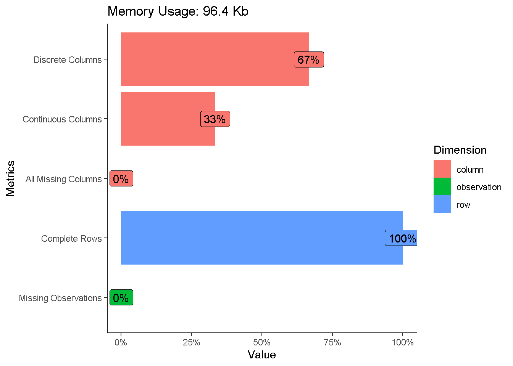
Eksploarasi Variabel Respon
df %>%
count(class) %>%
mutate(percent=n*100/sum(n),label=str_c(round(percent,2),"%")) %>%
ggplot(aes(x="",y=n,fill=class))+
geom_col()+
geom_text(aes(label = label),
position = position_stack(vjust = 0.5)) +
coord_polar(theta = "y")+
theme_void()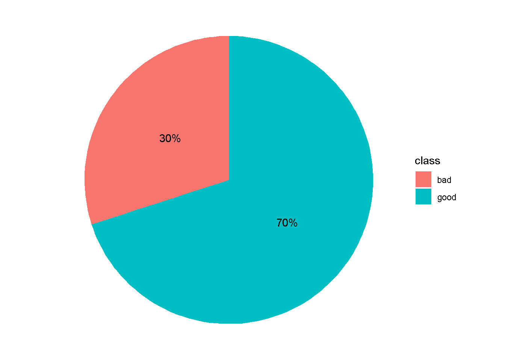
Eksplorasi Secara Numerik
skim_without_charts(df)| Name | df |
| Number of rows | 1000 |
| Number of columns | 21 |
| _______________________ | |
| Column type frequency: | |
| factor | 14 |
| numeric | 7 |
| ________________________ | |
| Group variables | None |
Variable type: factor
| skim_variable | n_missing | complete_rate | ordered | n_unique | top_counts |
|---|---|---|---|---|---|
| checking_status | 0 | 1 | FALSE | 4 | ‘no: 394,’<0: 274, ‘0<: 269,’>=: 63 |
| credit_history | 0 | 1 | FALSE | 5 | ’ex: 530, ’cr: 293, ’de: 88, ’al: 49 |
| purpose | 0 | 1 | FALSE | 10 | rad: 280, ’ne: 234, fur: 181, ’us: 103 |
| savings_status | 0 | 1 | FALSE | 5 | ’<1: 603, ’no: 183, ’10: 103, ’50: 63 |
| employment | 0 | 1 | FALSE | 5 | ‘1<: 339,’>=: 253, ‘4<: 174,’<1: 172 |
| personal_status | 0 | 1 | FALSE | 4 | ’ma: 548, ’fe: 310, ’ma: 92, ’ma: 50 |
| other_parties | 0 | 1 | FALSE | 3 | non: 907, gua: 52, ’co: 41 |
| property_magnitude | 0 | 1 | FALSE | 4 | car: 332, ’re: 282, ’li: 232, ’no: 154 |
| other_payment_plans | 0 | 1 | FALSE | 3 | non: 814, ban: 139, sto: 47 |
| housing | 0 | 1 | FALSE | 3 | own: 713, ren: 179, ’fo: 108 |
| job | 0 | 1 | FALSE | 4 | ski: 630, ’un: 200, ’hi: 148, ’un: 22 |
| own_telephone | 0 | 1 | FALSE | 2 | non: 596, yes: 404 |
| foreign_worker | 0 | 1 | FALSE | 2 | yes: 963, no: 37 |
| class | 0 | 1 | FALSE | 2 | goo: 700, bad: 300 |
Variable type: numeric
| skim_variable | n_missing | complete_rate | mean | sd | p0 | p25 | p50 | p75 | p100 |
|---|---|---|---|---|---|---|---|---|---|
| duration | 0 | 1 | 20.90 | 12.06 | 4 | 12.0 | 18.0 | 24.00 | 72 |
| credit_amount | 0 | 1 | 3271.26 | 2822.74 | 250 | 1365.5 | 2319.5 | 3972.25 | 18424 |
| installment_commitment | 0 | 1 | 2.97 | 1.12 | 1 | 2.0 | 3.0 | 4.00 | 4 |
| residence_since | 0 | 1 | 2.85 | 1.10 | 1 | 2.0 | 3.0 | 4.00 | 4 |
| age | 0 | 1 | 35.55 | 11.38 | 19 | 27.0 | 33.0 | 42.00 | 75 |
| existing_credits | 0 | 1 | 1.41 | 0.58 | 1 | 1.0 | 1.0 | 2.00 | 4 |
| num_dependents | 0 | 1 | 1.16 | 0.36 | 1 | 1.0 | 1.0 | 1.00 | 2 |
Eksplorasi Hubungan prediktor kategorik dengan respon
plot_bar(data = df,by = "class",
ggtheme = theme_classic(),
ncol = 2)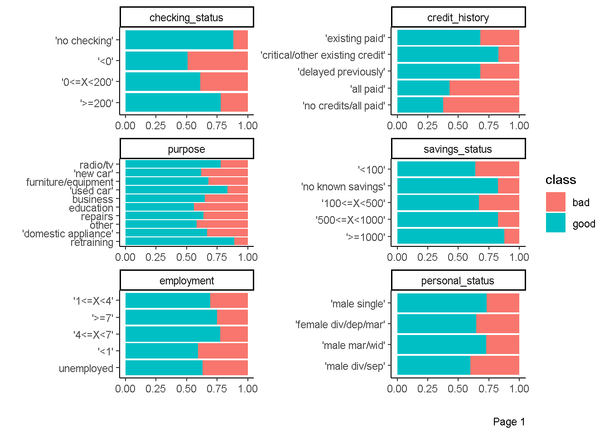
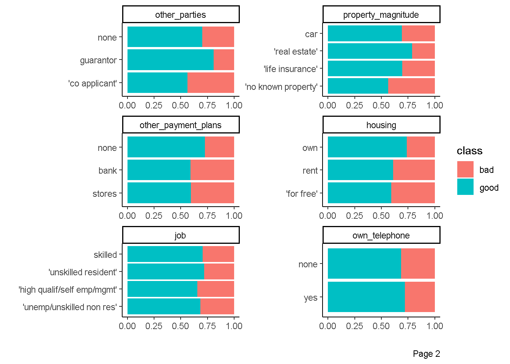
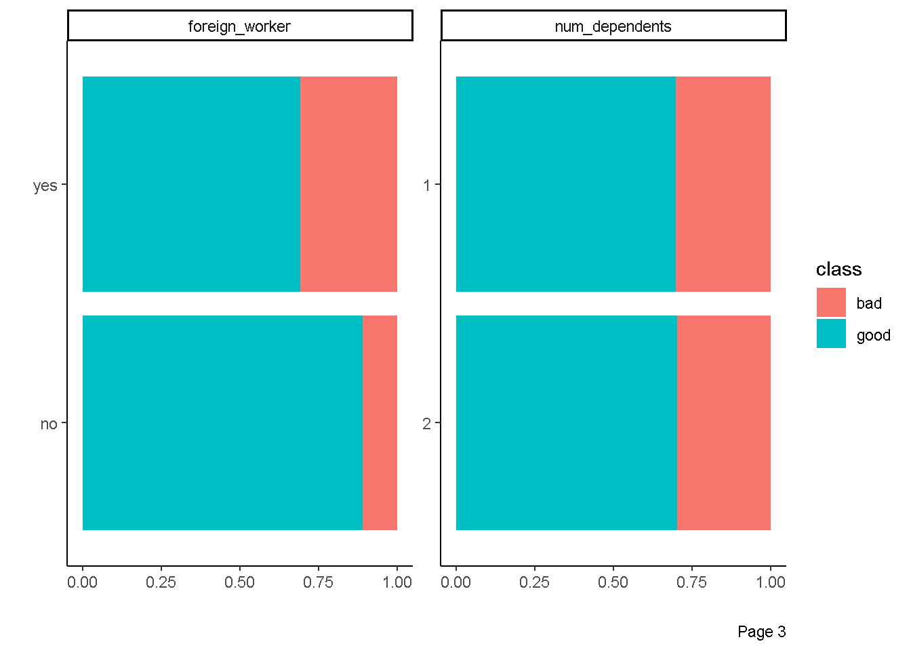
Eksplorasi Hubungan prediktor kontinu dengan respon
plot_boxplot(data = df,by = "class",
ggtheme = theme_classic(),
geom_boxplot_args = list(fill="#03A9F4"))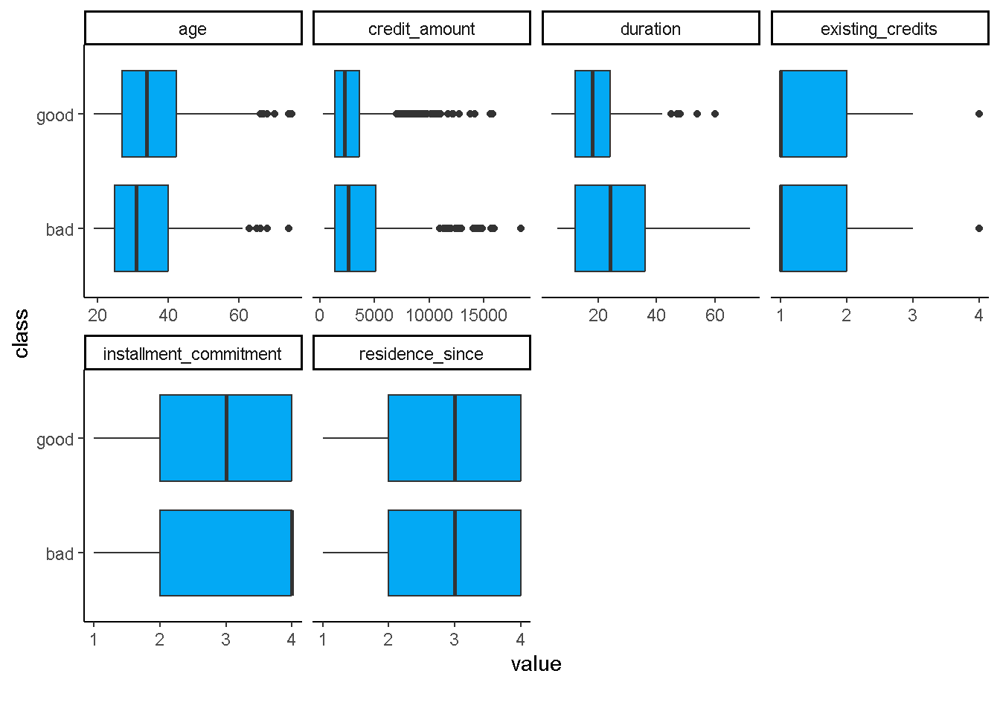
Eksploarsi Hubungan antar Prediktor Kontinu
plot_correlation(data = df,
type = "continuous",
cor_args = list(method="spearman"),
ggtheme = theme_classic(),
theme_config = list(legend.position = "none",
axis.text.x=element_text(angle = 90)))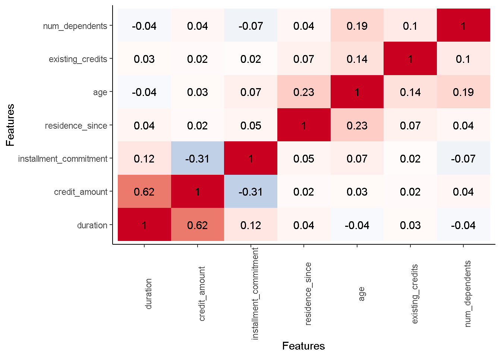
Praproses Data
Dalam ekosistem tidymodels, praproses data dapat dilakukan dengan package recipe(read more) dan juga turunannya seperti:
- package
themisuntuk menangani masalah class imbalanced - package
embeduntuk predictors transformation (encoding) - package
textrecipesuntuk praproses text data
Tahap praproses data terdiri dari
- Data Cleaning. Menangani Missing Value, outlier, duplikasi data dan kesalahan input data.
- Feature Engineering. Feature Engineering adalah proses transformasi data mentah menjadi suatu fitur yang lebih baik dalam merepresentasikan pola yang terkandung di dalam data, sehingga dapat meningkatkan performa model.
Berikut adalah ilustrasi penggunaan package recipe untuk Feature Engineering.
Disclaimer: praproses di bawah hanya diperuntukan untuk ilustrasi penggunaan package
recipesaja sehingga tidak memiliki alasan khusus kenapa di terapan tahapan praproses dibawah ini.
Tanpa Praproses
Kita hanya perlu menuliskan fungsi recipe dari package recipe dengan argumen formula dan data.
no_preproc <- recipe(formula=class~.,data = df)Dengan Praproses
Kita perlu menambahkan fungsi step_* setelah fungsi recipe. Dalam ilustrasi ini, kita akan mereduksi dimensi seluruh variabel prediktor kontinu ke 3 dimensi saja dengan metode PCA. Hal ini dapat dicapai dengan menggunakan fungsi step_pca.
basic_prepoc <- recipe(class~.,data = df) %>%
step_pca(all_numeric_predictors(),
num_comp = 3,
options = list(center = TRUE,
scale. = TRUE))- fungsi
all_numeric_predictors()menandakan bahwa variabel yang akan direduksi adalah semua variabel prediktor kontinu num_comp=3berarti kita akan mereduksi dimensi menjadi 3 dimensioptions = list(center = TRUE,scale. = TRUE)berarti sebelum direduksi dimensi variabel asalnya kita rubah menjadi variabel-variabel yang memiliki rata-rata yang mendekati 0 dan standar deviasi mendekati 1.
Kemudian, kita bisa memeriksa bagaimana hasi praproses dengan menggunakan fungsi prep dan bake seperti dibawah ini
## memeriksa hasil praproses
basic_prepoc %>%
prep() %>%
bake(new_data = NULL)# A tibble: 1,000 × 17
checking_status credit_history purpose savings_status employment
<fct> <fct> <fct> <fct> <fct>
1 '<0' 'critical/other existing c… radio/… 'no known sav… '>=7'
2 '0<=X<200' 'existing paid' radio/… '<100' '1<=X<4'
3 'no checking' 'critical/other existing c… educat… '<100' '4<=X<7'
4 '<0' 'existing paid' furnit… '<100' '4<=X<7'
5 '<0' 'delayed previously' 'new c… '<100' '1<=X<4'
6 'no checking' 'existing paid' educat… 'no known sav… '1<=X<4'
7 'no checking' 'existing paid' furnit… '500<=X<1000' '>=7'
8 '0<=X<200' 'existing paid' 'used … '<100' '1<=X<4'
9 'no checking' 'existing paid' radio/… '>=1000' '4<=X<7'
10 '0<=X<200' 'critical/other existing c… 'new c… '<100' unemployed
# ℹ 990 more rows
# ℹ 12 more variables: personal_status <fct>, other_parties <fct>,
# property_magnitude <fct>, other_payment_plans <fct>, housing <fct>,
# job <fct>, own_telephone <fct>, foreign_worker <fct>, class <fct>,
# PC1 <dbl>, PC2 <dbl>, PC3 <dbl>## memeriksa hasil praproses
basic_prepoc %>%
prep() %>%
bake(new_data = NULL) %>%
glimpse()Rows: 1,000
Columns: 17
$ checking_status <fct> '<0', '0<=X<200', 'no checking', '<0', '<0', 'no c…
$ credit_history <fct> 'critical/other existing credit', 'existing paid',…
$ purpose <fct> radio/tv, radio/tv, education, furniture/equipment…
$ savings_status <fct> 'no known savings', '<100', '<100', '<100', '<100'…
$ employment <fct> '>=7', '1<=X<4', '4<=X<7', '4<=X<7', '1<=X<4', '1<…
$ personal_status <fct> 'male single', 'female div/dep/mar', 'male single'…
$ other_parties <fct> none, none, none, guarantor, none, none, none, non…
$ property_magnitude <fct> 'real estate', 'real estate', 'real estate', 'life…
$ other_payment_plans <fct> none, none, none, none, none, none, none, none, no…
$ housing <fct> own, own, own, 'for free', 'for free', 'for free',…
$ job <fct> skilled, skilled, 'unskilled resident', skilled, s…
$ own_telephone <fct> yes, none, none, none, none, yes, none, yes, none,…
$ foreign_worker <fct> yes, yes, yes, yes, yes, yes, yes, yes, yes, yes, …
$ class <fct> good, bad, good, good, bad, good, good, good, good…
$ PC1 <dbl> -1.4374699, 2.2597114, -0.5184279, 2.6376242, 0.74…
$ PC2 <dbl> 2.7622605, -1.8069247, 1.2076170, 1.3624068, 2.734…
$ PC3 <dbl> -0.80190159, -0.09224456, 1.86397366, 1.01548818, …Selanjutnya kita dapat menambahkan tahap praproses lain dengan menuliskan fungsi step_* lainnya. Sebagai ilustrasi kita akan mereduksi banyaknya kategori di variabel purpose dengan menyatukan beberapa kategori yang memiliki frekuensi sedikit
df %>%
count(purpose) %>%
arrange(n) purpose n
1 retraining 9
2 'domestic appliance' 12
3 other 12
4 repairs 22
5 education 50
6 business 97
7 'used car' 103
8 furniture/equipment 181
9 'new car' 234
10 radio/tv 280Misal kita akan menggabungkan kategori yang memiliki frekuensi dibawah 50. Berdasarkan output diatas, maka kategori yang akan digabungkan adalah kategori retraining,domestic appliance, other dan repairs.
Kita bisa mereduksi banyaknya kategori dalam suatu variabel kategorik dengan fungsi step_other.
basic_prepoc <- basic_prepoc %>%
step_other(purpose,threshold = 50)threshold = 50berarti kategori yang memiliki frekuensi dibawah 50 akan digabung.
Berikut adalah hasil praprosesnya
## memeriksa hasil praproses
basic_prepoc %>%
prep() %>%
bake(new_data = NULL) %>%
glimpse()Rows: 1,000
Columns: 17
$ checking_status <fct> '<0', '0<=X<200', 'no checking', '<0', '<0', 'no c…
$ credit_history <fct> 'critical/other existing credit', 'existing paid',…
$ purpose <fct> radio/tv, radio/tv, education, furniture/equipment…
$ savings_status <fct> 'no known savings', '<100', '<100', '<100', '<100'…
$ employment <fct> '>=7', '1<=X<4', '4<=X<7', '4<=X<7', '1<=X<4', '1<…
$ personal_status <fct> 'male single', 'female div/dep/mar', 'male single'…
$ other_parties <fct> none, none, none, guarantor, none, none, none, non…
$ property_magnitude <fct> 'real estate', 'real estate', 'real estate', 'life…
$ other_payment_plans <fct> none, none, none, none, none, none, none, none, no…
$ housing <fct> own, own, own, 'for free', 'for free', 'for free',…
$ job <fct> skilled, skilled, 'unskilled resident', skilled, s…
$ own_telephone <fct> yes, none, none, none, none, yes, none, yes, none,…
$ foreign_worker <fct> yes, yes, yes, yes, yes, yes, yes, yes, yes, yes, …
$ class <fct> good, bad, good, good, bad, good, good, good, good…
$ PC1 <dbl> -1.4374699, 2.2597114, -0.5184279, 2.6376242, 0.74…
$ PC2 <dbl> 2.7622605, -1.8069247, 1.2076170, 1.3624068, 2.734…
$ PC3 <dbl> -0.80190159, -0.09224456, 1.86397366, 1.01548818, …## memeriksa hasil praproses
basic_prepoc %>%
prep() %>%
bake(new_data = NULL) %>%
count(purpose) %>%
arrange(n)# A tibble: 7 × 2
purpose n
<fct> <int>
1 education 50
2 other 55
3 business 97
4 'used car' 103
5 furniture/equipment 181
6 'new car' 234
7 radio/tv 280atau kita bisa menuliskan sintaksnya secara langsung
basic_prepoc <- recipe(class~.,data = df) %>%
step_pca(all_numeric_predictors(),
num_comp = 3,
options = list(center = TRUE,
scale. = TRUE)) %>%
step_other(purpose,threshold = 50)## memeriksa hasil praproses
basic_prepoc %>%
prep() %>%
bake(new_data = NULL) %>%
glimpse()Rows: 1,000
Columns: 17
$ checking_status <fct> '<0', '0<=X<200', 'no checking', '<0', '<0', 'no c…
$ credit_history <fct> 'critical/other existing credit', 'existing paid',…
$ purpose <fct> radio/tv, radio/tv, education, furniture/equipment…
$ savings_status <fct> 'no known savings', '<100', '<100', '<100', '<100'…
$ employment <fct> '>=7', '1<=X<4', '4<=X<7', '4<=X<7', '1<=X<4', '1<…
$ personal_status <fct> 'male single', 'female div/dep/mar', 'male single'…
$ other_parties <fct> none, none, none, guarantor, none, none, none, non…
$ property_magnitude <fct> 'real estate', 'real estate', 'real estate', 'life…
$ other_payment_plans <fct> none, none, none, none, none, none, none, none, no…
$ housing <fct> own, own, own, 'for free', 'for free', 'for free',…
$ job <fct> skilled, skilled, 'unskilled resident', skilled, s…
$ own_telephone <fct> yes, none, none, none, none, yes, none, yes, none,…
$ foreign_worker <fct> yes, yes, yes, yes, yes, yes, yes, yes, yes, yes, …
$ class <fct> good, bad, good, good, bad, good, good, good, good…
$ PC1 <dbl> -1.4374699, 2.2597114, -0.5184279, 2.6376242, 0.74…
$ PC2 <dbl> 2.7622605, -1.8069247, 1.2076170, 1.3624068, 2.734…
$ PC3 <dbl> -0.80190159, -0.09224456, 1.86397366, 1.01548818, …basic_prepoc %>%
prep() %>%
bake(new_data = NULL) %>%
count(purpose)# A tibble: 7 × 2
purpose n
<fct> <int>
1 'new car' 234
2 'used car' 103
3 business 97
4 education 50
5 furniture/equipment 181
6 radio/tv 280
7 other 55Fungsi step_* lainnya bisa diakses pada website recipe berikut ini
Model Training and Evaluation
Tahap ini harusnya berada di dalam Tahap Model Selection. Namun diletakan sebelum Model Selection hanya untuk ilustrasi saja. Pada Praktiknya bisa langsung ke Model Selection.
Mendefinisikan model
Model-model yang bisa digunakan dalam ekosistem tidymodels ada di dalam pacakge parsnip(read more).Selain itu package turunan dari parsnip seperti brulee dan bonsai juga bisa digunakan.
Package parsnip menggunakan istilah engine untuk mengakses package asal dari model. Misalkan saja untuk model decision_tree kita bisa menggunakan package/engine rpart dan C5.0 (dengan catatan kita harus menginstall package tersebut). Daftar lengkap package/engine yang bisa digunakan untuk decision_tree ada di website parsnip.
Berikut adalah ilustrasi penggunaanya
tree_mod <- decision_tree() %>%
set_engine(engine = "rpart") %>%
set_mode(mode = "classification")- fungsi
decision_treeberarti kita ingin menggunakan model decision tree - fungsi
set_enginedigunakan untuk mengakses package/engine yang digunakan untuk model - fungsi
set_modedigunakan untuk menentukan apakah problem yang dihadapi merupakanclassificationatauregression
Pembagian Data
Tahap pembagian data ini sangat bergantung pada package rsample(read more). Metode-metode yang ada di dalam rsample adalah
- Holdout Sample dengan fungsi
initial_split - Cross Validation dengan fungsi
vfold_cv - Group Cross Validation dengan fungsi
group_vfold_cv - Leave-One-Out Cross-Validation dengan fungsi
loo_cv
basic_split <- initial_split(data = df,
prop = 0.8,
strata = "class")data = dfuntuk menentukan data yang akan dilakukan pembagianprop=0.8proporsi pembagian yang dialokasikan ke data trainingstrata = "class"teknik sampling yang digunakan untuk melakukan pembagian adalah Stratified Random Sampling dengan didasarkan stratifikasi pada peubah responclass.
Berikut adalah hasil pembagianya
tidy(basic_split) %>%
count(Data)# A tibble: 2 × 2
Data n
<chr> <int>
1 Analysis 800
2 Assessment 200Training (Analysis) data yang kita dapatkan adalah 800 amatan atau \(0.8 \times 1000\), sedangkan Testing (Assessment) data yang didapatkan adalah 200 amatan atau \((1-0.8)*1000\).
Berikut adalah sintaks untuk memesiahkan training data dan testing data.
train_df <- training(basic_split)
dim(train_df)[1] 800 21test_df <- testing(basic_split)
dim(test_df)[1] 200 21- fungsi
trainingberguna memisahkan training data dari data awal - fungsi
testingberguna memisahkan testing data dari data awal
Model Training
Model training bisa dilakukan dengan memanfaatkan fungsi workflow seperti dibawah ini:
tree_mod_trained <- workflow() %>%
add_recipe(recipe = no_preproc) %>%
add_model(spec = tree_mod) %>%
fit(data=train_df)- fungsi
add_recipedigunakan untuk menambahkan tahap praproses data menggunakan packagerecipe - fungsi
add_modeldigunakan untuk menambahkan model yang akan dilakukan training. - fungsi
fitdigunakan untuk menjalankan training.
Model Evaluation
Prediksi Testing Data
Berikut adalah sintaks mendapatkan prediksi testing data dalam bentuk kategori (factor)
pred_tree_mod <- tree_mod_trained %>%
predict(new_data = test_df,type = "class")
pred_tree_mod # A tibble: 200 × 1
.pred_class
<fct>
1 bad
2 good
3 bad
4 good
5 bad
6 good
7 good
8 good
9 good
10 good
# ℹ 190 more rowstype = "class"argumen untuk mendapatkan prediksi dalam bentuk kategori (factor)- Pada dasarnya hasil prediksi dari tree berbentuk peluang, secara otomatis diubah menjadi kategori variabel respon dengan threshold=0.5
Berikut adalah sintaks mendapatkan prediksi testing data dalam bentuk peluang
prob_tree_mod <- tree_mod_trained %>%
predict(new_data = test_df,type = "prob")
prob_tree_mod# A tibble: 200 × 2
.pred_bad .pred_good
<dbl> <dbl>
1 0.712 0.288
2 0.138 0.862
3 0.712 0.288
4 0.26 0.74
5 0.712 0.288
6 0.229 0.771
7 0.138 0.862
8 0.26 0.74
9 0.138 0.862
10 0.138 0.862
# ℹ 190 more rowstype = "prob"argumen untuk mendapatkan prediksi dalam bentuk [kategori (factor) peluang
Confussion Matrix
Berikut adalah sintaks untuk menambahkan kolom variabel respon dari testing data
pred_tree_mod <- pred_tree_mod %>%
#menambahkan kolom truth
mutate(truth=test_df$class)
pred_tree_mod# A tibble: 200 × 2
.pred_class truth
<fct> <fct>
1 bad bad
2 good good
3 bad bad
4 good good
5 bad bad
6 good good
7 good good
8 good good
9 good good
10 good good
# ℹ 190 more rowsSelanjutnya, kita akan mengeluarkan confussion matriks
confussion_matrix <- pred_tree_mod %>%
conf_mat(truth=truth,estimate=.pred_class)Confusion matriks dapat ditampilkan dalam bentuk chart sebagai berikut:
autoplot(confussion_matrix,type = "heatmap")+
scale_fill_gradient(low = "#F4AFAB",high = "#EE847E")Scale for fill is already present.
Adding another scale for fill, which will replace the existing scale.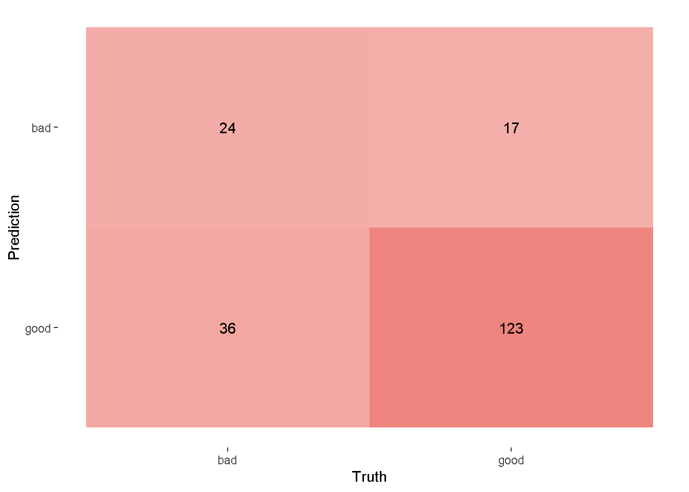
- fungsi
autoplotdigunakan untuk mennampilkan confussion matrix - fungsi
scale_fill_gradientdigunakan untuk memberi warna pada confussion matrix - Berdasarkan output confussion matrix, terlihat bahwa sebagai hasil prediksi dari kategori
badbanyak yang salah prediksi dibandingkan dengan hasil prediksi dari kategorigood.
Evaluasi model dengan metric
Pertama-tama, kita harus definsikan terlebih dahulu metrics yang kita gunakan. Metrics-metrics ini didapatkan dengan menggunakan package yardstick(read more).
multi_metric <- metric_set(accuracy,
sensitivity,
specificity,
bal_accuracy,
f_meas)- fungsi
metric_setdigunakan untuk menyatukan beberapa metrik evaluasi. f_measadalah metrik f1-score
Berikut adalah hasil evaluasi prediksi pada testing data menggunakan 5 metrik yang sudah didefinisikan
pred_tree_mod %>%
#menambahkan kolom truth
mutate(truth=test_df$class) %>%
# evaluasi prediksi berdasarkan metrik
multi_metric(truth = truth,estimate = .pred_class)# A tibble: 5 × 3
.metric .estimator .estimate
<chr> <chr> <dbl>
1 accuracy binary 0.735
2 sensitivity binary 0.4
3 specificity binary 0.879
4 bal_accuracy binary 0.639
5 f_meas binary 0.475Kemudian, metrik auc dibawah ini digunakan untuk mengevaluasi prediksi dalam bentuk peluang.
prob_tree_mod %>%
mutate(truth=test_df$class) %>%
roc_auc(truth = truth,.pred_bad)# A tibble: 1 × 3
.metric .estimator .estimate
<chr> <chr> <dbl>
1 roc_auc binary 0.742Model Selection
Pada tahap ini kita bisa memilih model yang terbaik untuk kasus data kita. Beberapa langkah di tahap Model Selection sudah dijelaskan di Model Training and Evaluation. Sebagai ilustrasi kita akan membandingkan hasil model pohon, random forest dan regresi logistik.
Mendefinisikan model
Seperti yang dijelaskan sebelumnya, model-model yang ada di package parsnip berasal dari package-package yang berbeda, berikut rinciannya:
- Decision tree menggunakan package
rpart - Random Forest menggunakan package
ranger - Regresi Logistik menggunakan fungsi
glmdari packagestats
Berikut adalah sintaks untuk mendefinsikan model, penjelasan detailnya sama seperti yang sebelumnya:
tree_mod <- decision_tree() %>%
set_engine(engine = "rpart") %>%
set_mode(mode = "classification")rf_mod <- rand_forest() %>%
set_engine(engine = "ranger",importance="impurity") %>%
set_mode(mode = "classification")importance="impurity"digunakan untuk mengekstrak variable importance dari random forest
lr_mod <- logistic_reg() %>%
set_engine(engine = "glm") %>%
set_mode(mode = "classification")Pembagian Data
Pembagian data dilakukan dengan menggunakan metode Cross Validation dengan fungsi vfold_cv. Berikut sintaksnya:
folds <- vfold_cv(data = df,v = 10,strata = "class")v = 10untuk menentukan banyaknya fold yang digunakan dalam Cross Validation adalah 10.strata = "class"metode sampling yang digunakan adalah Stratified Random Sampling dengan stratifikasi berdasarkan kolomclassyang berperan sebagai variabel respon.
Model Training and Evaluation
Model Training and Evaluation akan dilakukan dengan bantuan fungsi workflow_set dan workflow_map. Kedua fungsi ini memungkinkan kita untuk melakukan pemilihan model terbaik berdasarkan metrik-metrik tertentu.
Fungsi workflow_set digunakan untuk menginput tahap praproses data dan model apa yang digunakan. Sementara itu, fungsi workflow_map digunakan untuk menginputkan metode pembagian data dan metrik sekaligus melakukan model training and evaluation. Berikut adalah sintaksnya:
mod_selection_trained <- workflow_set(preproc = list(no=no_preproc,basic=basic_prepoc),
models = list(tree_mod,rf_mod,lr_mod),
cross = TRUE ) %>%
workflow_map(fn = "fit_resamples",
resamples= folds,
metrics = multi_metric,
control = control_resamples(save_workflow = TRUE),
seed = 2045)- argumen
preprocdigunakan untuk menginputkan tahap praproses data - sintaks
no=danbasic=digunakan untuk memberi nama pada tahap praproses data - argumen
modelsdigunakan untuk menginputkan model - argumen
cross=TRUEmenandakan bahwa tahap praproses data dan model dipasangkan secara kombinasi. Sebagai ilustrasi tahap praproses databasicakan dipasangkan dengan model decision tree, random forest dan regresi logistik. - argumen
cross=TRUEmenandakan bahwa tahap praproses data dan model dipasangkan sesuai dengan urutanyan. Sebgai ilustrasi tahap praproses datanodipasangkan dengan decision. tree dan tahap praproses databasicakan dipasangkan dengan random forest. Semetara model regresi logistik tidak punya tahap praproses data sehingga akan menyebabkanerror. - argumen
fndigunakan untuk menentukan fungsi tidymodels yang akan digunakan. - argumen
resamplesdigunakan untuk menginputkan metode pembagian data - argumen
metricsdigunakan untuk menginputkan metrik-metrik. - untuk argumen
controlbisa melihat help untuk lebih jelas.
Hasil training and evaluation pada sintaks sebelumnya disimpan dalam objek mod_selection_trained. Selanjutnya kita akan menampilkan hasilnya dengan menggunakan ranking.
custom_output <- function(data){
data %>%
mutate(method = map_chr(wflow_id, ~ str_split(.x, "_",simplify = TRUE)[1])) %>%
select(method,model,.metric,mean,std_err,rank)
}
mod_selection_result <- rank_results(mod_selection_trained,
rank_metric = "bal_accuracy") %>%
custom_output()- argumen
rank_metricdigunakan untuk menentukan metrik apa yang digunakan sebagai ranking. Dalam hal ini metrik yang digunakan adalah balanced accuracy - fungsi
custom_outputdigunakan untuk mengkustomisasi output yang dihasilkan. Fungsi ini bisa tidak perlu dirubah-rubah.
mod_selection_result# A tibble: 30 × 6
method model .metric mean std_err rank
<chr> <chr> <chr> <dbl> <dbl> <int>
1 no logistic_reg accuracy 0.755 0.00477 1
2 no logistic_reg bal_accuracy 0.682 0.00677 1
3 no logistic_reg f_meas 0.549 0.0107 1
4 no logistic_reg sensitivity 0.5 0.0165 1
5 no logistic_reg specificity 0.864 0.00775 1
6 basic logistic_reg accuracy 0.757 0.00790 2
7 basic logistic_reg bal_accuracy 0.679 0.0105 2
8 basic logistic_reg f_meas 0.543 0.0158 2
9 basic logistic_reg sensitivity 0.483 0.0218 2
10 basic logistic_reg specificity 0.874 0.00971 2
# ℹ 20 more rowsmod_selection_result %>%
ggplot(aes(x = rank, y = mean, pch = method, col = model)) +
geom_point(cex = 3)+
facet_wrap(~.metric)+
theme_bw()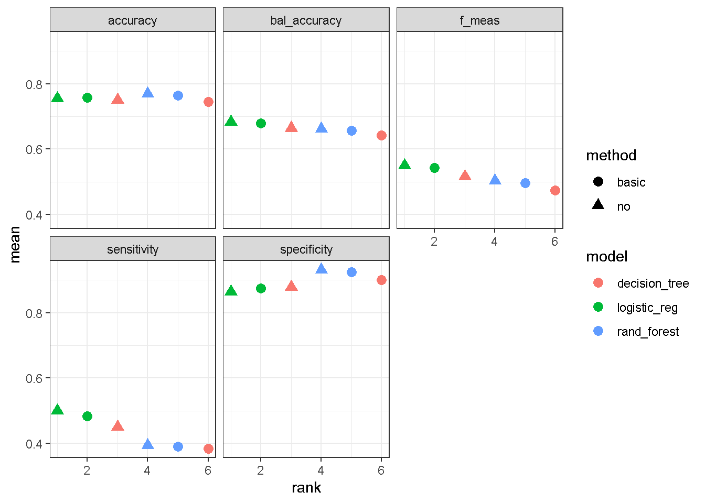
Berdasarkan output diatas, kombinasi praproses data dan model yang menempati ranking 1 berdasarkan metrik balanced accuracy adalah no+logistic_regression. Sehingga model terbaik yang kita peroleh adalah no+logistic_regression.
Setelah mendapatkan model terbaik kita bisa mengekstraknya model tersebut kemudian melakukan training ulang dengan seluruh data yang dimiliki menggunakan fungsi fit_best berikut ini
best_mod <- fit_best(x = mod_selection_trained,
metric="bal_accuracy")
best_mod══ Workflow [trained] ══════════════════════════════════════════════════════════
Preprocessor: Recipe
Model: logistic_reg()
── Preprocessor ────────────────────────────────────────────────────────────────
0 Recipe Steps
── Model ───────────────────────────────────────────────────────────────────────
Call: stats::glm(formula = ..y ~ ., family = stats::binomial, data = data)
Coefficients:
(Intercept)
1.2003826
checking_status'>=200'
0.9656768
checking_status'0<=X<200'
0.3748534
checking_status'no checking'
1.7118880
duration
-0.0278633
credit_history'critical/other existing credit'
1.5791493
credit_history'delayed previously'
0.9965391
credit_history'existing paid'
0.7294913
credit_history'no credits/all paid'
0.1433777
purpose'new car'
-0.5227827
purpose'used car'
1.1436842
purposebusiness
0.2173041
purposeeducation
-0.5590666
purposefurniture/equipment
0.2688276
purposeother
0.9660032
purposeradio/tv
0.3688007
purposerepairs
-0.3063868
purposeretraining
1.5366500
credit_amount
-0.0001283
savings_status'>=1000'
1.3391988
savings_status'100<=X<500'
0.3577406
savings_status'500<=X<1000'
0.3760729
savings_status'no known savings'
0.9466892
...
and 56 more lines.untuk memastikan training data yang digunakan adalah seluruh data yang kita miliki, kita bisa menggunakan fungsi dibawah ini:
extract_recipe(best_mod)── Recipe ──────────────────────────────────────────────────────────────────────── Inputs Number of variables by roleoutcome: 1
predictor: 20── Training information Training data contained 1000 data points and no incomplete rows.Model Interpretability (Explainability)
Tahap ini meruapakan tahap untuk mengerti bagaimana variabel-variabel prediktor berpengaruh terhadap prediksi berdasarkan model terbaik yang diperoleh pada tahap model selection.
Model Terbaik
Karena model terbaik adalah regresi logistik maka kita bisa menggunakan nilai koefisien dari regresi logistik untuk memahami bagaimana variabel-variabel prediktor berpengaruh terhadap prediksi.
tidy(best_mod,exponentiate=TRUE) %>%
mutate(across(where(is.numeric),~round(.x,3)))# A tibble: 49 × 5
term estimate std.error statistic p.value
<chr> <dbl> <dbl> <dbl> <dbl>
1 (Intercept) 3.32 1.42 0.845 0.398
2 checking_status'>=200' 2.63 0.369 2.62 0.009
3 checking_status'0<=X<200' 1.46 0.218 1.72 0.085
4 checking_status'no checking' 5.54 0.232 7.37 0
5 duration 0.973 0.009 -3.00 0.003
6 credit_history'critical/other existing … 4.85 0.438 3.60 0
7 credit_history'delayed previously' 2.71 0.47 2.12 0.034
8 credit_history'existing paid' 2.07 0.385 1.89 0.058
9 credit_history'no credits/all paid' 1.15 0.549 0.261 0.794
10 purpose'new car' 0.593 0.762 -0.686 0.493
# ℹ 39 more rowsTambahan
Dibawah ini adalah ilustrasi tambahan model interpretability untuk decision tree dan random forest.
# Retraining decision tree dengan seluruh data
tree_mod_trained <- workflow() %>%
add_recipe(recipe = no_preproc) %>%
add_model(spec = tree_mod) %>%
fit(data=df)extract_fit_engine(tree_mod_trained) %>%
rpart.plot(type = 2,extra = 106,
faclen = -1,
box.palette =blues9[-8:-9] ,
tweak = 1.4)Warning: Cannot retrieve the data used to build the model (so cannot determine roundint and is.binary for the variables).
To silence this warning:
Call rpart.plot with roundint=FALSE,
or rebuild the rpart model with model=TRUE.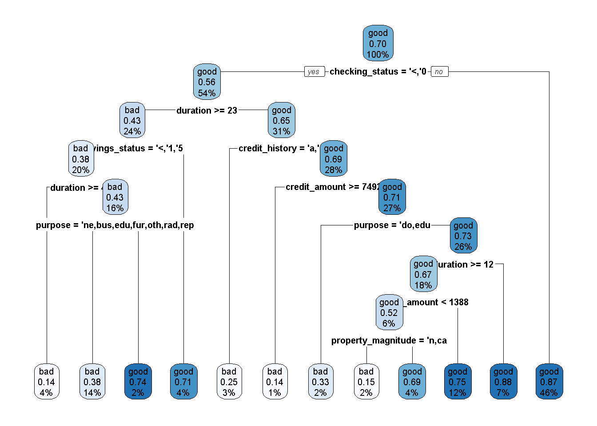
# Retraining Random Forest dengan seluruh data
rf_mod_trained <- workflow() %>%
add_recipe(recipe = no_preproc) %>%
add_model(spec = rf_mod) %>%
fit(data=df)fungsi plot_importance merupakan fungsi bantuan yang tidak perlu dirubah-rubah.
plot_importance<- function(rf){
rf %>%
ranger::importance() %>%
as.data.frame() %>%
rownames_to_column("Variables") %>%
rename("impurity"=".") %>%
arrange(impurity) %>%
mutate(Variables=factor(Variables,levels=Variables)) %>%
ggplot(aes(Variables,impurity))+
geom_col(fill="#03A9F4")+
coord_flip()+
theme_classic()+
theme(axis.line.y = element_blank(),
axis.ticks.y = element_blank(),
axis.title.y = element_blank() )+
scale_y_continuous(expand = c(0,0))
}extract_fit_engine(rf_mod_trained) %>%
plot_importance()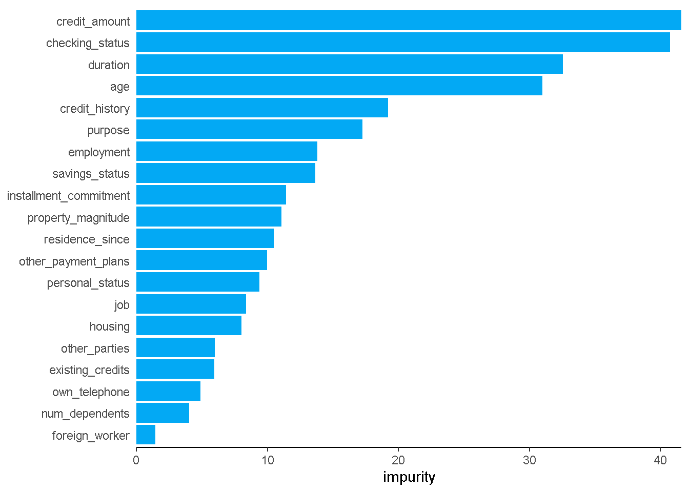
Model Deployment
Pada tahap ini kita akan menggunakan model untuk keperluan prediksi data baru. Hal pertama yang mungkin kita bisa lakukan adalah menyimpan model terbaik ke file berbentuk rds sehingga kita bisa menggunakanya tanpa perlu running sintaks dari awal. Tahap penyimpanan ini tidak wajib untuk dilakukan
saveRDS(best_mod,file = "credit_model.rds")Sintaks diatas berarti kita menyimpan model terbaik dalam file bernama credit_model.rds.
Prediksi Data Baru
set.seed(2045)
data_baru_dummy <- df %>%
slice_sample(n=7) %>%
select(-class)
data_baru_dummy checking_status duration credit_history
1 'no checking' 12 'existing paid'
2 '<0' 15 'existing paid'
3 '<0' 24 'existing paid'
4 '<0' 24 'all paid'
5 '<0' 18 'existing paid'
6 '<0' 21 'delayed previously'
7 'no checking' 36 'critical/other existing credit'
purpose credit_amount savings_status employment
1 'new car' 1386 '500<=X<1000' '1<=X<4'
2 'domestic appliance' 1275 'no known savings' '1<=X<4'
3 'new car' 915 'no known savings' '>=7'
4 furniture/equipment 3552 '<100' '4<=X<7'
5 'new car' 976 '<100' '<1'
6 education 3414 '<100' '<1'
7 business 6304 'no known savings' '>=7'
installment_commitment personal_status other_parties residence_since
1 2 'female div/dep/mar' none 2
2 4 'female div/dep/mar' none 2
3 4 'female div/dep/mar' none 2
4 3 'male single' none 4
5 1 'female div/dep/mar' none 2
6 2 'male single' none 1
7 4 'male single' none 4
property_magnitude age other_payment_plans housing existing_credits
1 'life insurance' 26 none own 1
2 car 24 none rent 1
3 car 29 bank own 1
4 car 27 bank own 1
5 car 23 none own 1
6 'life insurance' 26 none own 2
7 'real estate' 36 none own 2
job num_dependents own_telephone foreign_worker
1 skilled 1 none yes
2 skilled 1 none yes
3 skilled 1 none yes
4 skilled 1 none yes
5 'unskilled resident' 1 none yes
6 skilled 1 none yes
7 skilled 1 none yesnew_pred <- readRDS("credit_model.rds") %>%
predict(new_data = data_baru_dummy,type = "class")
new_pred# A tibble: 7 × 1
.pred_class
<fct>
1 good
2 bad
3 bad
4 bad
5 bad
6 bad
7 good sintaks readRDS("credit_model.rds") untuk meload model terbaik yang sudah kita simpan.
write.csv(x = new_pred,file = "submission.csv",row.names = F)